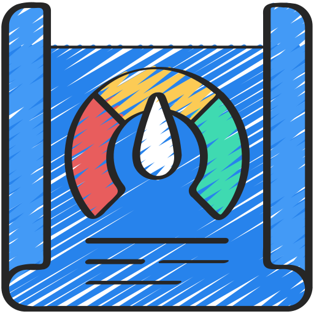

<ion-header [translucent]="true">
  <ion-toolbar color="success">
    <ion-title>
      App BMI
    </ion-title>
  </ion-toolbar>
</ion-header>

<ion-content class="ion-padding ion-text-center" [fullscreen]="true">
 
  <ion-card color="success" class="ion-padding">
    <ion-item>
      <ion-input label="กรอกน้ำหนัก" placeholder="kg" [(ngModel)]="weight"></ion-input>
    </ion-item>
 
    <ion-item>
      <ion-input label="กรอกส่วนสูง" placeholder="cm" [(ngModel)]="hight"></ion-input>
    </ion-item>
    <br>
    <ion-button size="large" expand="block" (click)="oncal()"  shape="round" color="dark">คำณวน</ion-button>
  </ion-card>

  <ion-card >
    <ion-card-header color="success">
      <ion-card-subtitle >ผลลัพธ์</ion-card-subtitle>
      <ion-card-subtitle>{{ result | number: '1.0-3' }}</ion-card-subtitle>
    </ion-card-header>
  </ion-card>

  <ion-card >
    <ion-card-header color="success">
      <ion-card-subtitle >แปรผล</ion-card-subtitle>
      <ion-card-subtitle>{{ result_text }}</ion-card-subtitle>
    </ion-card-header>
  </ion-card>

</ion-content>